01THE UNEXPECTED
ON THE ROAD / 01
The man crossing America on his hands.
A remarkable encounter challenges assumptions about what determination looks like.
AUTHOR. CYCLIST. WORLD TRAVELER.
Meet Frosty Wooldridge—the writer who turned decades on a bicycle into extraordinary stories from six continents.
FEATURED BOOK THE KICKSTAND CHRONICLES
Explore the BookA JOURNEY TOLD ONE MILE AT A TIME THE KICKSTAND CHRONICLES
01 — THE FEATURED BOOK
TRUE STORIES. IMPOSSIBLE DETOURS. AN EXTRAORDINARY LIFE.
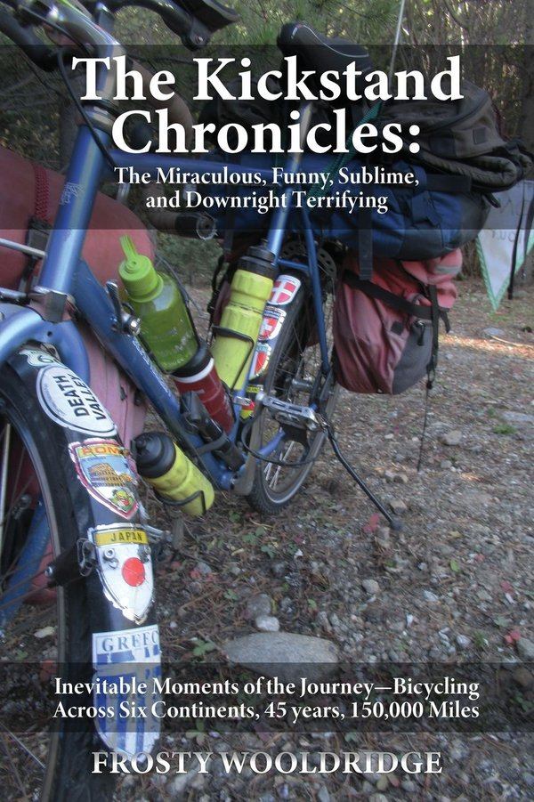
150);this.parentElement.classList.toggle('cover-unavailable',this.naturalWidth<=150)" onerror="this.parentElement.classList.add('cover-unavailable')">THE KICKSTAND CHRONICLES / 2023
What happens when you spend 45 years saying yes to the unknown?
Across six continents, Frosty encounters wild weather, remarkable strangers, grizzly bears and moments that stay with you long after the ride is over. These 62 true-life chapters bring the adventure home.
Explore / Buy the bookWHAT MAKES A LIFE WORTH WRITING ABOUT?
02 — THE MOMENTS THAT STAY
Across six continents, Frosty encountered people and situations that seem impossible until you read about them. These are glimpses from The Kickstand Chronicles.
A remarkable encounter challenges assumptions about what determination looks like.
One of the offbeat moments behind the humor in Frosty's travel writing.
The kind of wilderness encounter that stays with a traveler long after the ride is over.
03 — MORE BOOKS
Beyond the miles: cycling journals, adventure, life stories and essays. Explore 17 published titles across Frosty’s writing.
17 titles · One remarkably wide-ranging shelf
Forty-five years of bicycle travel across six continents unfold through 62 encounters: unusual people, brushes with danger, humor and hard-won wonder. Frosty invites readers to take the seat beside him and see how an ordinary road becomes a story.
See book details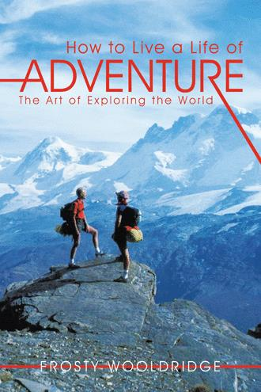
60)this.closest('.catalog-art').classList.add('cover-loaded');else this.remove()" onerror="this.remove()">Across six sections and 64 chapters, Frosty combines first-hand adventures with a practical approach to finding purpose, building confidence and turning the wish to explore into action. Each teaching chapter is paired with stories from journeys around the world.
See book details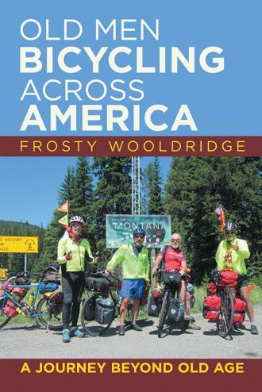
60)this.closest('.catalog-art').classList.add('cover-loaded');else this.remove()" onerror="this.remove()">A long-distance bicycle journey becomes a meditation on possibility beyond the limits that age is supposed to impose. The story celebrates courageous departures, difficult stretches, the companions made along the way and the sunrise waiting beyond the next hill.
See book details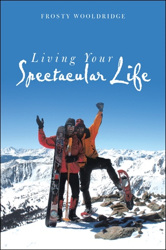
60)this.closest('.catalog-art').classList.add('cover-loaded');else this.remove()" onerror="this.remove()">A book devoted to pursuing a life with direction and intention. Its central challenge is also Frosty's message from the stage: discover the dream that matters to you, pursue it deliberately and make room to live it.
See book details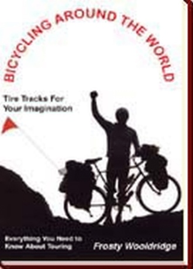
60)this.closest('.catalog-art').classList.add('cover-loaded');else this.remove()" onerror="this.remove()">From the Andes to the Australian Outback, Nepal and the American West, Frosty recounts remarkable characters, unexpected encounters and the exhilaration of long-distance touring. He mixes vivid travel episodes with the practical perspective of decades on two wheels.
See book details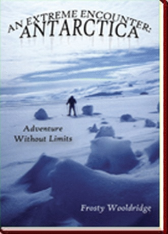
60)this.closest('.catalog-art').classList.add('cover-loaded');else this.remove()" onerror="this.remove()">To reach Antarctica, Frosty took a job at McMurdo Station and found a world of polar storms, scientists, penguins and astonishing extremes. This first-hand account explores both the stark beauty of the ice and the unusual people who make their lives there.
See book details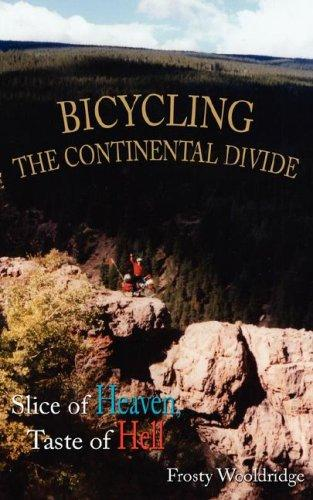
60)this.closest('.catalog-art').classList.add('cover-loaded');else this.remove()" onerror="this.remove()">A demanding ride along the Continental Divide becomes a test of endurance and companionship. Remote roads and punishing climbs make room for the moments of exhilaration that reward a cyclist willing to keep moving.
See book details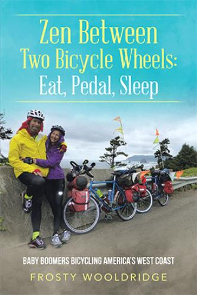
60)this.closest('.catalog-art').classList.add('cover-loaded');else this.remove()" onerror="this.remove()">A west-coast bicycle journey framed around the everyday rhythm of life on the road. The book brings a baby boomer's perspective to traveling under one's own power, finding people to meet and discovering what a slower pace can reveal.
Browse Frosty’s catalog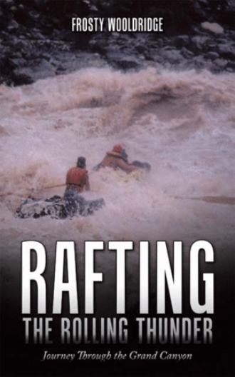
60)this.closest('.catalog-art').classList.add('cover-loaded');else this.remove()" onerror="this.remove()">The river, canyon walls and fierce current take center stage in this Grand Canyon adventure. Frosty brings the reader onto the water to share the excitement, challenges and unforgettable scale of a rafting journey.
Browse Frosty’s catalog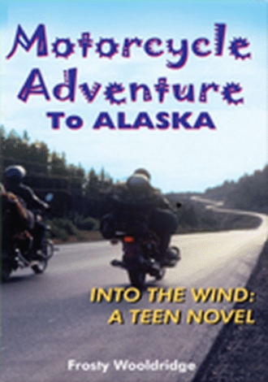
60)this.closest('.catalog-art').classList.add('cover-loaded');else this.remove()" onerror="this.remove()">In this young-adult adventure, two teenage brothers, Trevor and Dan, set out for Alaska on motorcycles. Encounters with wild country, danger and strangers push both boys toward greater confidence, responsibility and a deeper understanding of themselves.
See book details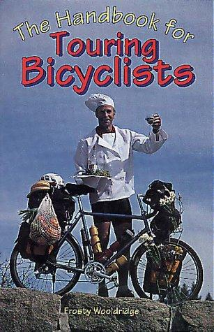
60)this.closest('.catalog-art').classList.add('cover-loaded');else this.remove()" onerror="this.remove()">An accessible primer for cyclists planning to travel beyond the familiar route. The guide addresses what to pack, how to prepare, the daily realities of touring and ways to make a first long-distance journey both practical and enjoyable.
See book details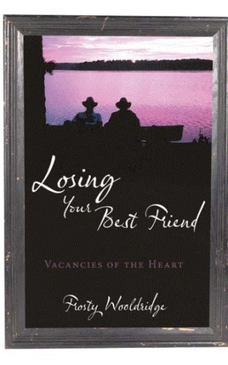
60)this.closest('.catalog-art').classList.add('cover-loaded');else this.remove()" onerror="this.remove()">Through personal stories, Frosty examines the grief and disorientation that come when a close friendship ends through distance, disagreement or death. He considers what friendship means and how people find a way forward after its loss.
See book detailsFrosty turns to romantic relationships in a book subtitled Co-Creating a Successful Relationship. It considers the effort of understanding one another, working through differences and building a connection with care and intention.
Browse Frosty’s catalog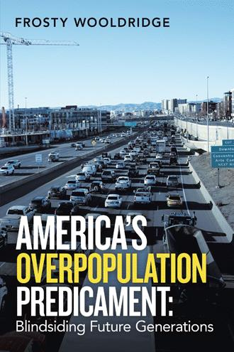
60)this.closest('.catalog-art').classList.add('cover-loaded');else this.remove()" onerror="this.remove()">A nonfiction examination of population growth in the United States and the pressures Frosty argues it places on land, natural resources and future generations. The book presents his environmental and public-policy perspective on long-term sustainability.
Browse Frosty’s catalogFrosty argues that continued population growth could strain America's water, energy, infrastructure and natural resources. This policy-focused book sets out his concerns about sustainability and calls for public debate over future growth.
See book details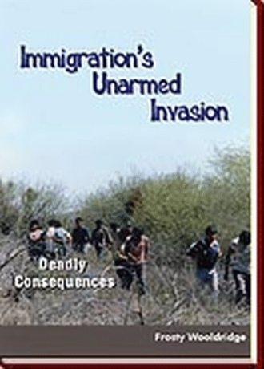
60)this.closest('.catalog-art').classList.add('cover-loaded');else this.remove()" onerror="this.remove()">A polemical examination of United States immigration policy and its proposed social and environmental consequences, written from Frosty's perspective. This book presents his arguments about population, immigration and national policy.
Browse Frosty’s catalog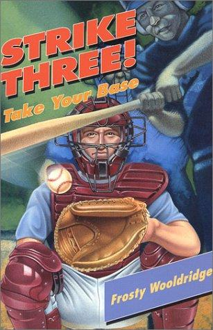
60)this.closest('.catalog-art').classList.add('cover-loaded');else this.remove()" onerror="this.remove()">A sports-themed children's novel by Frosty Wooldridge, set in the world of baseball and written for young readers.
See book details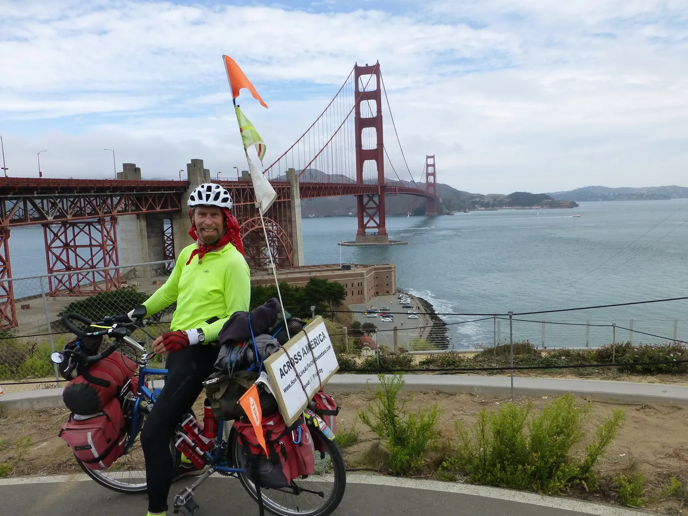
04 — MEET THE MAN BEHIND THE MILES
Frosty Wooldridge is an author, photographer, speaker, former educator and world bicycle traveler.
His work spans outdoor adventure, personal inspiration and the remarkable people he has met along the way. Years of travel have given him something no ordinary guidebook can offer: a truly lived perspective.
Discover Frosty's published profile05 — SPEAKING & INSPIRATION
Find your purpose. Chase the dream. Catch it. Live it.
FEATURED PRESENTATION
This program shows audiences how to find their dream—their purpose—and how to chase it, catch it and live it. That path might be high adventure, music or the arts; creative work such as pottery, jewelry, painting or sculpture; or nursing, dentistry, teaching, truck driving, building, design and the trades.
A former teacher, Frosty noticed that most young people finish high school without knowing what they want from life or how to discover their life’s work. He shares 12 concepts and practices that show how to discover the 37 work pathways in life, and which one will draw each person toward a happy, productive and contributing life.
Frosty closes each program with a dramatic photographic slide show and answers questions from the audience.
Or write to frostyw@juno.com